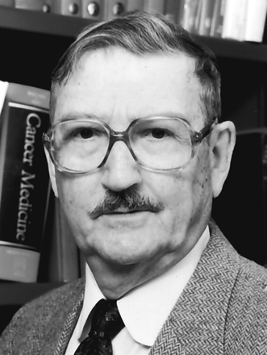

A ética desempenha o papel de fornecer diretrizes para alcançar uma vida plena, regulamentando assim as relações do indivíduo consigo mesmo e com os outros (ARISTÓTELES, 2019). Dessa forma, a ética é um campo amplo da filosofia que possui diversos pensadores e diferentes perspectivas.
Normalmente, filósofos gregos como Sócrates, Platão e Aristóteles são os mais lembrados no campo da ética. Cada um a seu modo, eles defendiam que a conduta humana deveria ser guiada pelo equilíbrio, visando evitar a falta de ética. Eles enfatizavam a importância da virtude, da moderação moral e de outras posturas voltadas para a ética.
Você Sabia?
A ética não foi pensada apenas por sociedades europeias. Sob uma perspectiva africana, podemos citar o campo da ética do conceito ubuntu. A palavra pode ser traduzida como "o que é comum a todas as pessoas".
Assim, a busca pelo comum demanda que nós pertençamos a uma comunidade e que nosso trabalho seja para nós e para os outros. De acordo com a ética do conceito ubuntu, essa percepção permite que nós alcancemos o autoconhecimento e a capacidade de desfrutar das nossas potencialidades (RAMOSE, 1999).
Outro exemplo é a ética do bem viver, que possui conexão entre as diferentes perspectivas dos povos indígenas da América Latina. Para o filósofo Ailton Krenak:
Bem Viver não é definitivamente ter uma vida folgada. O Bem Viver pode ser a difícil experiência de manter um equilíbrio entre o que nós podemos obter da vida, da natureza, e o que nós podemos devolver. É um equilíbrio, um balanço muito sensível e não é alguma coisa que a gente acessa por uma decisão pessoal.
Vídeo
Para saber mais sobre o bem viver assista ao vídeo:
https://youtu.be/tOLDlb-EXRg?si=WozW5ISofXOoJ0X0Ao longo da história, estudos sobre ética se diversificaram, com especial destaque para o desenvolvimento de novas tecnologias e os respectivos desafios éticos impostos por elas. É nesse cenário que surge a Bioética, cujo termo significa ética da vida.
A Bioética preocupa-se em analisar os argumentos morais a favor e contra determinadas práticas humanas que afetam a qualidade de vida e o bem-estar dos humanos e dos outros seres vivos e a qualidade dos seus ambientes, e em tomar decisões baseadas nestas análises. (REGO, 2007).
A bioética possui dois marcos relevantes, que são apresentados abaixo:
Livro "Bioethics: bridge to the future" (Bioética: ponte para o futuro), do oncologista Van Resslaer Potter, publicado em 1970.

Van Rensselaer Potter (1911 - 2001) foi um bioquímico americano e pesquisador na área de oncologia.
Fonte: Revista História Ciências Saúde.
#PraTodosVerem:
Fotografia preto e branco de um homem visto dos ombros para cima. Ele é branco, tem cabelos curtos grisalhos e olhos pequenos escuros. Usa óculos de aro quadrado, bigode, camisa branca e gravata preta sobre paletó cinzento.
Criação do "Kennedy Institute for the Study of Human Reproduction and Bioethics" (Instituto Kennedy para Estudos sobre Reprodução Humana e Bioética), por André Hellegers, em 1971 (GARRAFA, 2003).
O Kennedy Institute of Ethics é um centro de ética na Universidade de Georgetown, EUA. Fundado em 1971 com foco na ética médica, é um dos centros de ética acadêmica mais antigos do mundo.
Fonte: Kennedy Institute.
#PraTodosVerem:
Fotografia preto e branco de um prédio histórico neoclássico de 1789, contornado por árvores. A fachada extensa tem 3 andares, dezenas de pilastras, janelas altas e estreitas. No telhado, dezenas de torres com cruzes no topo. Em destaque, a torre central mais alta e larga.
Enquanto o primeiro marco propõe uma bioética global, estabelecendo laços entre as ciências naturais e as sociais e humanas, o segundo propõe uma bioética mais direcionada à área biomédica, buscando resolver os dilemas éticos nas interações entre profissionais de saúde e pacientes, bem como entre pesquisadores e os participantes de estudos de pesquisa (PETRA et al., 2024).
O segundo marco, a bioética biomédica, foi o que desenvolveu a Teoria Principialista, de autoria de Tom Beauchamp e James Childress, no livro "Principles of biomedical ethics" (Princípios da Ética Biomédica), publicado em 1979 (BEAUCHAMP, 2009).
Nesse livro, os autores defendem quatro princípios para a Ética biomédica: autonomia, não-maleficência, beneficência e justiça. A teoria dos quatro princípios de Beauchamp e Childress é a abordagem ética mais usual na bioética.
De acordo com a teoria, não existe hierarquia entre os princípios, ou seja, um princípio não é mais importante que os outros ou têm prioridade sobre os demais. Além disso, todos os princípios devem sempre ser respeitados.
Em casos de conflitos entre os princípios, deve-se fazer uma ponderação de acordo com o caso. Sua utilização é mais apropriada para a assistência clínica e para a pesquisa e não para o campo da saúde pública.
Bioética Principialista
Fonte: Os quatro princípios da Bioética. Fonte: adaptado de Beauchamp T. & Childress J.( 2010)
A relevância do principialismo dentro da Bioética gera disputas e críticas, por conta disso, vamos abordá-lo brevemente. Ao final, vamos propor uma ética em imunizações não restrita ao principialismo, considerando princípios outros que estejam mais alinhados ao Sistema Único de Saúde e ao campo da Saúde Coletiva.